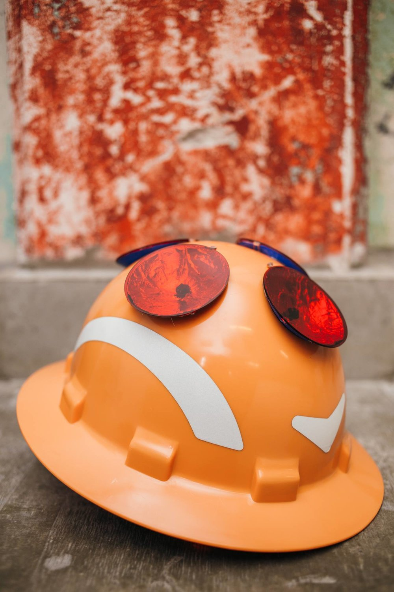
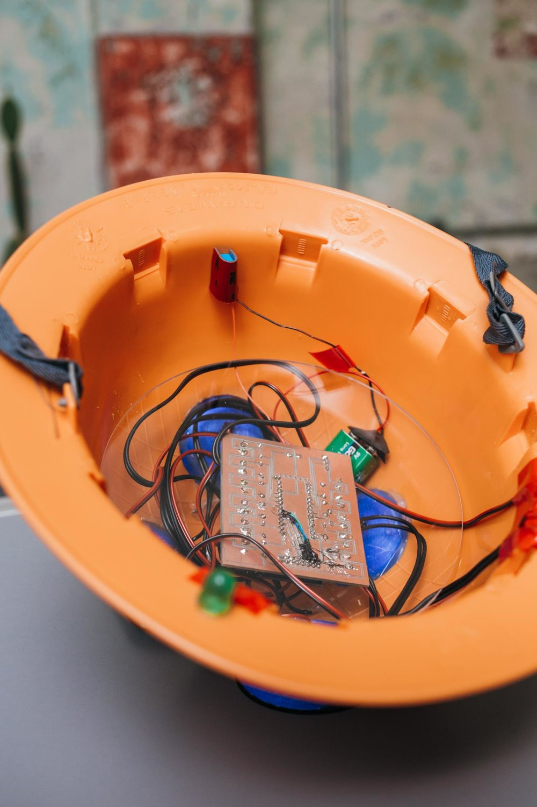
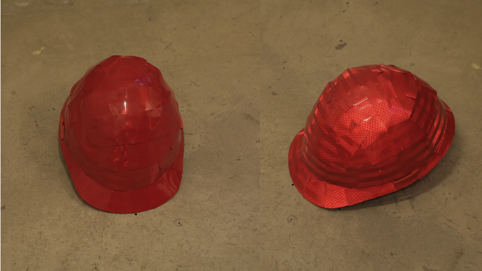
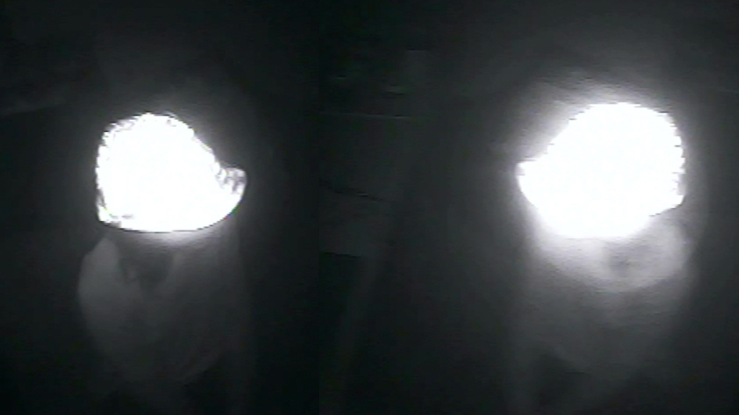
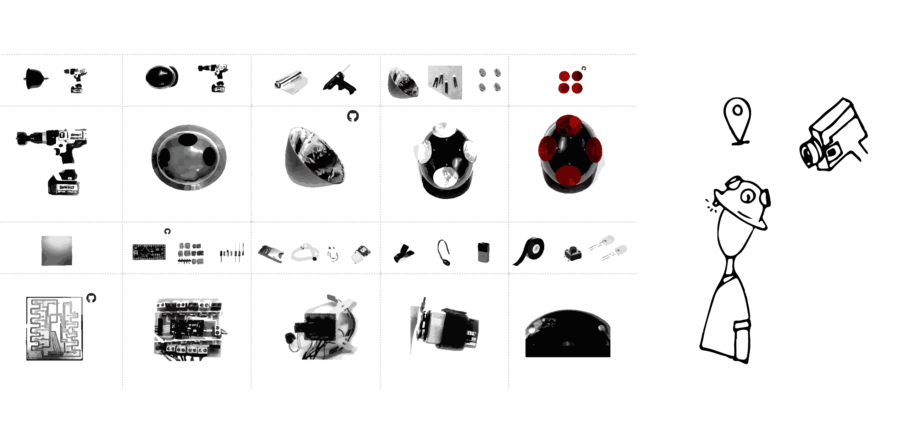
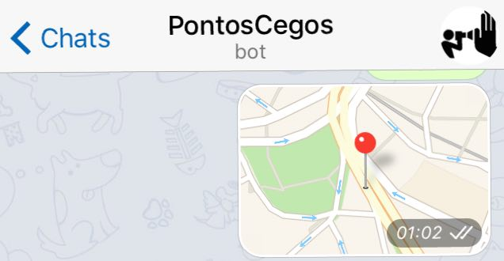

Blind Spots
detection and mapping of surveillance cameras
2016 ~ 2020
Blind Spots is a project which aims to create a tool of counter-surveillance. It is divided in two research approaches, Tactics of (In)Visibility:
TACTICS OF VISIBILITY
A helmet able to automatically detect surveillance cameras was created. It indicates to its users when they are being filmed. This device reveals and enhances cameras which are each time more discreet and camouflaged in the cities.
The device also contains a GPS and when it detects a camera, its coordinates are registered and saved on a map (see below), automatically mapping a given route.


TACTICS OF INVISIBILITY – IN PROCESS
A route designer is in development which is able to create routes from point A to point B, in a city, walking only by the blind spots of its cameras.
Here a first prototype of the invisibility route tracer.
In this line of research, I also offer workshops to create tools of invisibility, which are able to overshadow the registered images by surveillance cameras.


MAP
DIY | DEVICE

download a brief tutorial
COLLABORATE
Collaborate via Telegram, sharing the camera location with @PontosCegosBot



Photos
Pedro Andrada, Ariana Miliorini, Félix Blume
Exhibitions:
redBull Station | São Paulo
MedialabMX | Ciudad de México
Thanks to:
Clarisse Valadares, Luiza Brina, Maria Vitória, Pedro Godoy, Bizafra, Thiago Hersan